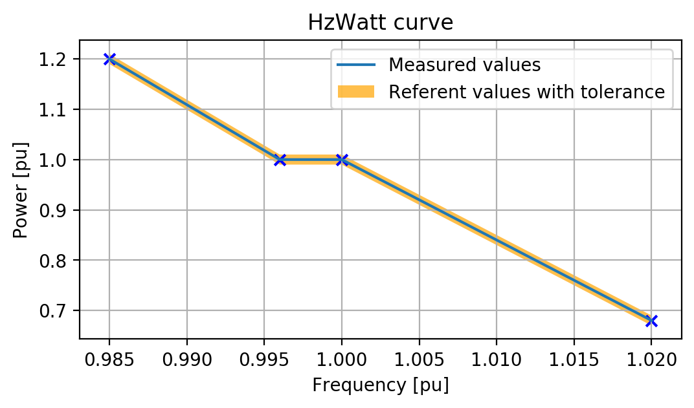

Generic PV plant
Description and demonstration of the capabilities of the Generic PV Plant component
Introduction
The usage of microgrids has been steadily increasing over the last few years, and so has been the need to model and test their control system. In short, the microgrid field is currently on the rise, accompanied by a growing need for more efficient microgrid components.
To address this need, Typhoon HIL software currently deploys three types of DER components in its Microgrid Library: Switching, Average, and Generic, all of which are ready for use and for their respective applications. Switching components are mainly used in situations where real-world converter testing is required at the system level, where highly detailed models of power electronics are required to interface with PWM outputs. Average components are used when you want to have a realistic emulation of dynamics without the need for a PWM interface and serious optimization of the use of HIL hardware resources. The main use of generic components is to allow you easily parametrize through provided nominal values, without a need for adjusting the details of the grid filter and control. As such, Generic components are especially convenient in grid stability and system integration studies, where the main interest is parametrization of the component with desired nominal values.
In this example, the main purpose of these components is to emulate the characteristic behavior of a grid connected PV plant in the following scenarios:
- active power curtailment and reactive power control
- plant state machine, faults detection, and limits according to nominal values
- ramping functionalities for reference signals and MPPT
This model demonstrates how you can use the Generic PV Plant components and what the advantages of these components are for your own applications in this domain.
Model description
The model consists of a PV Power Plant (Generic) connected to the Grid. There are also two user interface blocks which are intended to be used for sending and reading signals associated with Grid and PV Power Plant components respectively.
_001.png)
Generic components, unlike switching and average components, have inputs and defined outputs within the user interface. The PV Power Plant (Generic) component consists of two main parts: a high-level control subsystem and a low-level control subsystem with the power stage and all the measurements. You only need to change the parameters on the mask of the component (Figure 2) while all the inner logic and the power stage itself will be automatically scaled according to the parameters.
_002.png)
User Interface components make it easier for you to use Generic components. Unlike common microgrid components where you need to define all inputs and outputs, within the user interface all the inputs and outputs necessary for the operation of PV plant components are already defined for you. This is shown fully implemented in Figure 3. All that you have to do is just connect the Generic component with the appropriate User Interface block. Within this block, there are also some reserved inputs and outputs that can be used for additional functionalities and improvements. In addition to the usual inputs and outputs set by the Power Management System (PMS), there are external inputs related to external plant factors. In this case, the external inputs are temperature and solar irradiation.
_003.png)
Simulation
This application comes with a pre-built SCADA panel shown in Figure 4. It offers the most essential user interface elements (widgets) to monitor and interact with the simulation at runtime, allowing you to further customize it according to your needs.
_004.png)
The PV Power Plant operates only in grid following mode which eliminates the possibility for droop control, since this is only possible in a component which can operate in grid-forming mode (e.g. in a battery inverter).
The inverter has four operational states:
- Disabled – the state when the inverter is turned off and the main circuit breaker is open.
- Starting up - the state of the inverter between the moment of enabling signal activation and the moment when the inverter starts operating, e.g. the synchronization time.
- Running – the state when the inverter is operating.
- Error – the state when a fault is detected. If the inverter is in the error state, in order to start the plant again, it is necessary to reset the alarm.
PV Power Plant Interface is shown in Figure 5. The left of the figure shows the Inverter Control and Status where you can read the state of the inverter as well as get information if protection is active. Here you can also read the measurements of active, reactive and apparent power, as well as the power factor. Parameters, such as temperature and irradiance, can be changed in the External commands group.
_005.png)
One of the main advantages of generic components is the included protection. Here the following types of protection are implemented:
- Overcurrent protection – this type of protection occurs when some of the input phase currents are 1.5 times over the maximum allowed instantaneous current.
- Grid voltage is out of range - appears in case when the grid voltage is outside the specified relative range [0.5, 1.5] pu, shown in Figure 6. This protection is active in grid-following mode.
- Grid frequency is out of range – activation of this type of protection is caused by grid frequency which is outside the specific relative range [0.5, 1.5] pu, shown in Figure 7.
- Overpower protection – this type of protection kicks in when the measured apparent power is 1.2 times greater than the maximum allowed apparent power.
_006.png)
_007.png)
Test automation
This test demonstrates the HzWatt grid code functionality that is supported in the PV Power Plant (generic) component. Nominal parameters for the PV are defined on the component's mask. For this test, nominal power and nominal frequency are of interest. Nominal power is 250 kW while nominal frequency is 50 Hz.
The test contains five test cases. Four test cases verify if measured values for power and frequency correspond to the reference values. Different values for frequency and active power are set, and it is checked whether the measured values correspond to the reference values with a tolerance of 1%.
Those passed tests indicate that the reference value and measured value are in the expected bandwidth, meaning that HzWatt grid code functionality behaving as expected.
The last test case plots the HzWatt curve with reference and measured values as you can see in Figure 8. There are also indicated points corresponding to the measured frequency and active power. This plot is generated in TyphoonTest IDE.

Example requirements
Table 1 provides detailed information about the file locations and hardware requirements for running the model in real-time, followed by the HIL device resource utilization when running the model using this minimal hardware configuration. This information is provided to help you with running and customizing the model as you see fit.
| Files | |
|---|---|
| Typhoon HIL files | examples\models\microgrid\pv plant\pv plant (generic) pv plant gen.tse pv plant gen.cus examples\tests\109_pv_plant_generic\ test_pv_plant_generic.py |
| Minimum hardware requirements | |
| No. of HIL devices | 1 |
| HIL device model | HIL402 |
| Device configuration | 1 |
| HIL device resource utilization | |
| No. of processing cores | 1 |
| Max. matrix memory utilization | 7.52% |
| Max. time slot utilization | 90% |
| Simulation step, electrical | 1 µs |
| Execution rate, signal processing | Multirate (100 µs, 500 µs) |
Authors
[1] Jovana Markovic